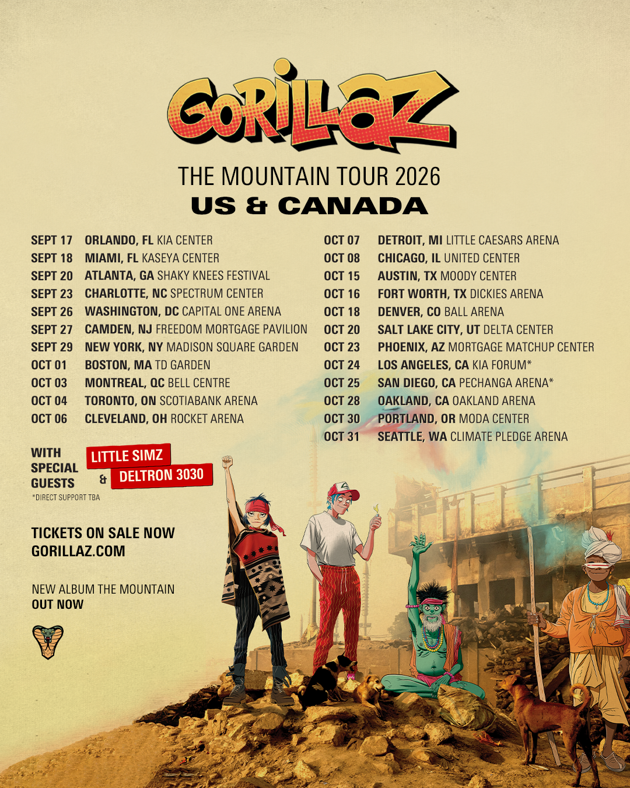

THE TOUR, MAPPED.Pick a point. Press play.
VOL. 01 — 2026The map could not load. Explore every show using the tour list.
Tour stopSelected show
23 STOPS / 2 COUNTRIES

A fan-made map of the 23 US and Canada dates on the supplied tour poster. Select a venue point to explore its setlist, then choose a song to play in Spotify or YouTube.
Setlists are community-maintained records from setlist.fm, researched November 1, 2026. Counts exclude tape interludes and soundchecks. Show notes flag partial songs and unusual entries.
Spotify is the default music service. Its native player may provide previews; full playback depends on your Spotify account and browser. YouTube is an alternative, but can block embedded videos. Recordings are not audio from the selected concert. The 911 track uses a clearly labeled Live in NYC recording. Each song has a provider link.
Venue points are approximate. The optional line connects stops in show order and does not represent a travel route. All geography is client-side GeoJSON, displayed with ArcGIS Maps SDK for JavaScript and Calcite UI without ArcGIS authentication.
Tour and album artwork © Gorillaz / Jamie Hewlett / respective rights holders. Additional artwork comes from the official Gorillaz website; see the artwork source notes. Natural Earth geography is public domain. Unofficial project; not endorsed by Gorillaz.
Research notes ↗ · Artwork credits ↗